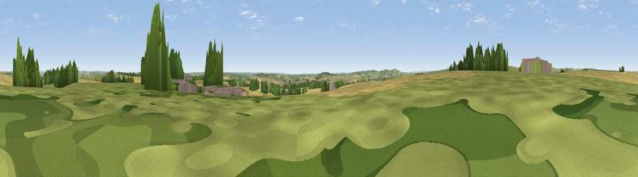

Coombe Bissett Down
#28974 in England · top 39% of its area beats it · near Coombe BissettThe view, rendered

A 360° render of this exact spot computed from the terrain model, tree cover and land cover — summer colours, afternoon light, calibrated against photographs of famous viewpoints. Real trees, hedges and buildings will differ in detail.
The panorama
Grey silhouette: terrain skyline in each direction (720 bearings, Earth curvature and refraction included). Dashed green: skyline with trees (+15 m) and buildings (+8 m) as obstacles. Blue strip: how far the ground is visible on each bearing.
Where the view opens
Wedge length = distance to the farthest visible ground on that bearing (vegetation-aware). Rings at 10, 25 and 50 km.
What fills the view
57% cropland · 28% grassland · 13% woodland · 3% built-up
Angular shares of the visible panorama (visual magnitude), not map area. Landscape diversity 0.45 (0–1 Shannon).
Key numbers
More beautiful places nearby
The staircase of upgrades: each row has a higher view potential than everything closer. Driving times are estimates from straight-line distance, calibrated against real road routing — check an actual route before setting out.
| Place | Direction | Drive | Score |
|---|---|---|---|
| Viewpoint near Coombe Bissett | N · 1 km | ~3 min | 49.9 |
| Viewpoint near Bishopstone | WNW · 2 km | ~6 min | 54.7 |
| Bishopstone Down | NNW · 6 km | ~14 min | 57.6 |
| Hydon Hill | NW · 8 km | ~16 min | 61.2 |
| Marleycombe Hill | W · 8 km | ~16 min | 63.3 |
| Viewpoint near Martin | SW · 9 km | ~17 min | 64.6 |
| Viewpoint near Cranborne | SW · 9 km | ~18 min | 65.0 |
| Trow Down | W · 13 km | ~24 min | 67.5 |
51.01264, -1.85722 · source: osm peak · position refined by local search. Computed location — check access rights before visiting.